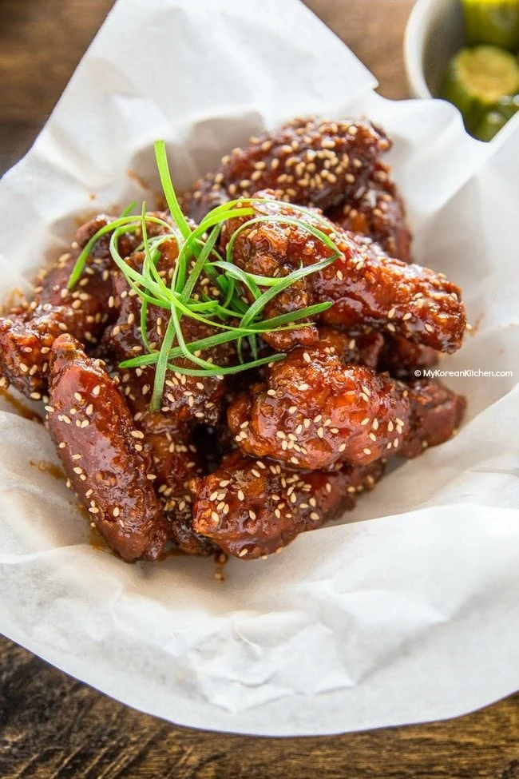

Korean Fried Chicken

Description
The best Korean Fried Chicken – crispy coated buttermilk fried chicken smothered in a spicy Korean-inspired gochujang sauce.
Would you care for super crunchy chicken that is coated with hugely addictive homemade Korean sweet chili sauce? Then read on.
This Korean fried chicken is perfect for any occasion and I’m sure everyone will fall in love with it instantly. Learn how to make it in three simple steps!
Ingredients
Main
- 1.4 kg / 3 pounds whole chicken, cut into pieces or chicken wings / drumsticks / boneless chicken thigh – choose from these based on your preference, rinsed
- 2 Tbsp rice wine
- 2 tsp minced ginger
- 1 tsp fine sea salt
- /2 tsp ground black pepper
- 1 cup potato starch or corn starch
- Some cooking oil for deep frying (I used rice bran oil)
Korean Fried Chicken Sauce
- 3 Tbsp tomato sauce / ketchup
- 2 Tbsp to 2 1/2 Tbsp gochujang (Korean chilli paste)
- 1/4 cup honey
- 1/4 cup brown sugar
- 2 Tbsp soy sauce
- 2 Tbsp minced sgarlic
- 1 Tbsp sesame oil
Steps
- In a bowl, place the chicken, rice wine, ginger, salt and black pepper. Combine them well. Then evenly coat the chicken with the starch and set side.
- In a deep saucepan (or frier) add a generous amount of oil and heat it until the oil temperature reaches 175 C / 347 F (or boiling). Start adding the battered chicken carefully and fry them until they cook (between 3 to 5 mins, depending on the size of chicken). Do not overcrowd the pan. (It might be useful to use a grease splatter screen if you have one. It’s super handy! It minimises oil splatter.)
- Take out the done chicken and place them onto some kitchen paper while frying the remaining chicken pieces. Once the first set of deep frying is completed, quickly scoop out any floating debris from the oil using a skimmer. Then deep fry the chicken again when the oil temperature reaches 175 C / 347 F (or boiling). Fry them until the batter is golden and crisp. (The second time frying is shorter than the first time, 2 to 3 mins) Set aside.
- In a separate saucepan, add in the Korean fried chicken sauce ingredients (listed above). Heat the sauce over low to medium heat and stir well. Once it starts bubbling, remove the pan from the heat.
- Place the double fried chicken into a large mixing bowl then pour the fried chicken sauce over the chicken to coat. Mix them lightly and thoroughly. Alternatively, serve the fried chicken and the sauce separately and use the sauce as a dipping sauce.
- Once all the chicken is coated with the sauce, serve it hot immediately. Leftover chicken can be refrigerated for a day or two and eaten cold. But it won’t be as crunchy.